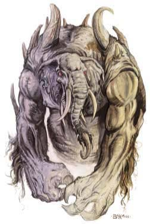

大型异界生物 (邪恶，跨位面，守序)

| 生命骰： | 8d8+24 (60 hp) |
| 先攻： | +0 |
| 速度： | 30 英尺 |
| 防御等级： | 20 (�C1 体型，+11 天生)，接触 9，措手不及 20 |
| 基本攻击／擒抱： | +8/+18 |
| 攻击： | 爪抓 +13 近战 |
| 全力攻击： | 2 爪抓 +13 近战 和 长鼻尖刺 +8 近战 |
| 伤害： | 爪抓 1d6+6，长鼻尖刺 2d6+3 |
| 面宽／触及： | 10 英尺/5 英尺 |
| 特殊攻击： | 喷吐武器，狂暴冲锋，精通攫抓，类法术能力 |
| 特殊能力： | 防御姿态，伤害减免10/魔法，快速医疗 2，敏锐感官，异界生物特性，灵敏嗅觉，法术抗力 17 |
| 豁免： | 强韧 +9，反射 +6，意志 +12 |
| 属性： | 力量 22，敏捷 11，体质 16，智力 14，感知 19，魅力 15 |
| 技能： | 估价 +12，平衡 +10，专注 +14，交涉 +4，跳跃 +16，知识（任一） +12，聆听 +16，搜索 +12，察言观色 +14，法术辨识 +12，侦察 +16，生存 +4（+6 追踪） |
| 专长： | 警觉，精通冲撞，钢铁意志 |
| 地域： | 任意陆地或地下 (九层地狱) |
| 组织： | 单独 |
| 挑战等级： | 10 |
| 宝物： | 双倍标准 |
| 阵营： | 通常守序邪恶 |
| 进化： | 9�C16 HD (大型)；17�C24 HD (超大型) |
巨象魔是一种强大的守卫邪魔，被用来保护和防御邪魔与法师的宝库。
该生物的基本形态为类人形，站立时高 9 英尺，重 800 磅。巨象魔的双手相对于其身体显得过大，且指尖有利爪。它的头部类似于小耳象的头，有一个布满小牙齿的小嘴，流脓的小红眼，以及一条长而卷曲的鼻子，鼻子顶端有一根细长的尖刺。
最初由强大的巴特祖领主创造出来担任守卫，许多巨象魔在其领主被废黜后逃脱了奴役。如今，每一只都在下层位面独自游荡，被一股压倒性的、想要保护和守卫的冲动驱使，尽管它自己并无任何东西可守护。如果某个强大的个体能够为巨象魔提供其生存所需的大量鲜活血肉，它会欣然同意为那个个体充当守卫。
巨象魔会说通用语和炼狱语。
巨象魔会为保护其领地或其守卫对象战斗至死，且绝不会将入侵者或盗贼追出其所守卫之物的视线范围。巨象魔在固守防线阻止进入某一区域方面，与在迫使入侵者撤退方面同样有效。巨象魔从不擅离岗位，并会立即停止任何攻击以应对其守卫对象面临的新的威胁。它通常会在战斗的前几轮使用类法术能力在其守卫对象周围构筑一道防御屏障。
巨象魔可使用怪物召唤术 VIII（summon monster VIII）法术来召唤。
喷吐武器 (Breath Weapon) (Su)：每日三次，巨象魔可以喷出一团 10 英尺宽、30 英尺长有毒雾汽。雾汽区域内的受害者必须通过一次强韧豁免（DC 17），否则遭受完全失忆。失忆会压制生物在其所有等级上的技能及其专长，并阻止其使用任何职业能力（包括施法）。当前准备的法术不会丢失；它们只是变得无法施放。种族能力得以保留。此外，受害者不再知晓谁是朋友谁是敌人，不记得自己的过去，甚至想不起自己的名字。受害者可以创造新的记忆，但每次睡眠或休息时，它所创造的任何新记忆都会消失。此状态可被任何能治疗中毒的效果治愈（例如医疗术或中和毒性法术）；否则，即为永久性。
狂暴冲锋 (Frenzied Charge) (Ex)：每分钟一次，巨象魔可以进行一次狂暴冲锋。在此效果发生的轮内，巨象魔的速度增至 45 英尺，并在所有攻击检定上获得 +2 加值。此加值与进行冲锋攻击所获得的任何加值叠加。
精通攫抓 (Improved Grab) (Ex)：如果巨象魔用爪抓攻击命中一个体型至少比它小一级的对手，它在造成正常伤害的同时，能以一个不会引发借机攻击的自由动作尝试开始擒抱（擒抱加值 +18）。如果擒抱成立，它会自动用长鼻尖刺命中。此后，巨象魔可以选择正常进行擒抱，或仅用其爪抓来钳制对手（擒抱检定承受�C20减值，但巨象魔不被视为被擒抱）。无论哪种情况，它在后续轮中每次成功的擒抱检定都会自动造成爪抓伤害。
类法术能力 (Spell-Like Abilities)：随意施放――魔法警报（alarm），纠缠术（entangle），造风术（gust of wind），光亮术（light），真知术（true seeing），曲木术（warp wood）；每日三次――剑刃障壁（blade barrier），恶意变形术（baleful polymorph）。施法者等级 8 级；豁免 DC 12 + 法术等级。
防御姿态 (Defensive Stance) (Ex)：每遭遇一次，巨象魔可以在其回合以一个自由动作进入防御姿态。在此防御姿态中，巨象魔获得力量 +2，体质 +4，所有豁免获得 +2 抗力加值，以及AC获得 +4 闪避加值。只要防御姿态持续，以下改变即生效：生命骰 8d8+40 (76 hp)；防御等级 24，接触 13，措手不及 20；基本攻击/擒抱 +9/+19；全力攻击 2 爪抓 +14 近战 和 长鼻尖刺 +9 近战；伤害 爪抓 1d6+7，长鼻尖刺 2d6+4；豁免 强韧 +11，反射 +8，意志 +14；力量 24，体质 20；专注 +16，跳跃 +17。这些益处持续轮数等于 3 + 巨象魔新提升的体质调整值，或直至巨象魔移动。在防御姿态中，巨象魔无法使用需要其移动位置的技能或能力。巨象魔可以随意结束其防御姿态。在防御姿态结束时，巨象魔在当前遭遇的剩余时间内承受 �C2 力量减值。
敏锐感官 (Keen Senses) (Ex)：巨象魔的视力是人类视力的四倍。它拥有昏暗视觉和 240 英尺范围内的黑暗视觉。
异界生物特性 (Outsider Traits)：巨象魔无法被复活或复生（尽管许愿术或神迹术可以恢复生命）。
快速医疗 (Fast Healing) (Ex)：巨象魔以每轮 2 点的速度恢复失去的生命值。快速医疗不会恢复因饥饿、干渴或窒息而失去的生命值，也不会让巨象魔再生或重新接上失去的身体部位。
灵敏嗅觉 (Scent) (Ex)：巨象魔可以察觉逼近的敌人，嗅出隐藏的敌人，并通过气味追踪。